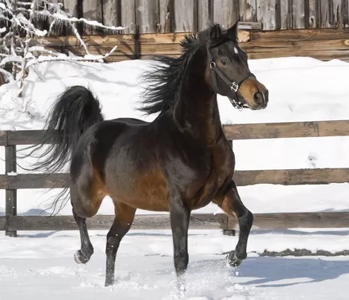

Horses
Most Popular Horse Breeds and types of Horses
1.American Quarter Horse
Embraced by beginners and professional equestrians all around the world, the American quarter horse is famous for its agility, docility, and athleticism. Originally bred from English thoroughbreds and Native American Chickasaw horses during the 1600s, it has the largest breed registry in the world. These horses are shining stars on the trail and in the show ring.
2.Arabian Horse
The Arabian has the oldest horse breed registry in the world. Its lineage goes as far back as 3000 B.C. In fact, every light horse breed, including Appaloosas, Morgans, and Andalusians, can trace their ancestry back to the Arabian. It can be a rather spirited horse breed, so not all beginners can handle it. But it's also generally a loving and loyal horse.
3.Thoroughbred Horse
Thoroughbreds are the most popular racing horse in North America. This breed is considered a "hot-blooded" horse, which means it's known for its agility, speed, and spirit. It's a fine multipurpose horse that often has a career in other equestrian competitions besides racing, such as dressage and jumping. Or it simply lives its life as a companion animal for pleasure riding.
4.Appaloosa Horse

The colorful spotted Appaloosa was originally developed for hunting and battle by the Nez Perce Native Americans. It's believed to be a descendant of wild horses mixed with the thoroughbred, American quarter horse, and Arabian. This hardy, versatile horse is great for herding, pleasure riding, long-distance trail riding, and more.
5.Morgan Horse
The strength and elegance of the Morgan have made it a popular horse breed. As the official horse breed of Vermont, the muscle of the Morgan was used for clearing and tilling New England farms during colonial times. Today, it's a popular driving and riding horse. It's surefooted over rough trail and dignified in the show ring.
6.Warmbloods Horse
In equine circles, the terms "hot-blooded," "warm-blooded," and "cold-blooded" are used to categorize a horse's temperament, size, and origin. Medium-size horses, including the American quarter horse, Hanoverian, Cleveland bay, and Canadian, are considered warmbloods with a European heritage. They contain a touch of the temper you get from lithe, "hot-blooded" thoroughbreds or Arabians combined with the calm demeanor of "cold-blooded" working horses. And that balanced temperament makes for a popular horse.
7.Ponies Horse
Ponies are another popular category of horses. In most cases, a horse that's fully grown at 14.2 hands (57 inches) or less is considered a pony. (There are two exceptions: the miniature horse and the Icelandic horse.) The plucky Shetland and elegant Welsh are popular breeds of ponies. With their short stature, they are often excellent first horses for children.
8.Grade Horse
Grade horse—a horse of no particular breeding—is the fancy term for the mutts of the horse world. They differ from crossbreeds because crosses are the result of known pedigreed horses that are intentionally bred. Grade horses may not have a distinguished pedigree, but they can be just as versatile and loyal as any other horse. They also generally lack many of the genetic diseases that pass through purebreds.
9.Gaited Breeds Horse
Gaited horses are a category of horses that have been selectively bred for a smooth ride or ambling gait. These horses tend to go at an intermediate speed with a four-beat movement. Breeds including the Tennessee walking horse, Kentucky mountain saddle horse, Icelandic horse, and Paso Fino are popular choices for older riders, those who have joint issues, and anyone else looking for a bounce-free ride.
10.Draft Breeds Horse

Draft horses are cold-blooded, heavy horses known for doing work pulling heavy loads. Historically, they were also used in battle to carry the weight of heavily armored soldiers. These horses have thick coats and manes that enable them to endure cold weather, and they're not easily spooked. The Clydesdale, Percheron, Shire, and Belgian are some popular examples of these gentle giants. In addition, draft horse crossbreeds can be ideal first horses, as they're often docile and loving.
Explore Horse Ownership Basics
Learn the Common Causes of Sudden Death in Horses
How to Tell a Horse's Age by Its Teeth
15 Fascinating Facts About Horses
Understanding Your Horse's Sense of Smell
Learn the Parts of a Horse with This Pictorial Guide
The Definition of a Sound Horse
The 8 Essential Manners Every Horse Should Have
Horse Breeds
Description


Make Your Horse Love You By Spending Time With Them When you think about your relationships with other people, what improves those relationships the most? Quality time and communication. If you want your horse to love you, it’s vital that you’re a large enough part of their life that they have the opportunity to begin developing a bond with you. Being a good horse owner is a significant time commitment that requires a “for better, for worse, for richer, for poorer, in sickness and in health” level of dedication. If you’re not sure what quality time with a horse looks like, here are a few of my favorite bonding activities with my horse.Take a Walk and Explore New Areas With Your Horse One great thing to do with your horse is to lead them with a lead rope and explore new areas. If you’ve been doing a lot of rigorous training, this can be a nice change of pace for your horse or a good cool-down activity for them. Taking walks with your horse gives each of you the perfect opportunity to bond with each other in a low-pressure situation. One of the most fun things about owning a horse is learning all of the quirks in their personality that make them unique, and taking a walk is a great time to discover these. If your horse is prone to dragging behind, grazing, or walking in front of you while being led, you can watch my YouTube video here on how to lead a horse. Stand With Your Horse As They Graze Another way to spend quality time with your horse is to simply stand near them while they’re grazing. Let’s be honest, horses love to graze. And if they learn that they don’t have to stop one of their favorite activities whenever you’re around, they’ll appreciate you all the more for it. Of course, you don’t want your horse demonstrating disrespectful behavior by constantly trying to graze while you ride or when you’re leading them, but setting aside designated time to just enjoy their company while they graze is perfectly fine behavior. Groom Your Horse Grooming is the perfect bonding activity to do with your horse because it can be therapeutic for both you and your horse, and it’s also an important part of being a responsible horse owner.
Our Founder
Pradhumna Yadav
Linkedin | InstagramFounder of Horse At Home
My name is Pradhumna Yadav, I am the founder of "Horse At Home". Currently, I am pursuing BTech 3rd year in electrical engineering from Medicaps University Indore.